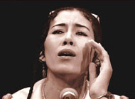

С некоторой неуверенностью начинаю задуманную серию трипов на пространство Центральной Азии, региона экс-СССР. Попытаюсь пояснить...
В Советском Союзе была выстроенная национальная политика в области культуры и, в частности, народной музыки. Каждая республика имела свой фольклорный коллектив(ы), призванный прославлять конкретную официально одобренную музыкальную форму. Лучшие из них (скажем так) составляли своеобразную сборную СССР по музыке, которая раз'езжала по миру с пропагандой советского образа жизни. Все прочие формы музыкального народного творчества как бы не существовали, в лучшем случае оставаясь уделом собирателей фольклора. Так, к примеру, не существовало тувинского горлового пения.
После распада Советского Союза эта система начала рушиться, но далеко не везде. Центральная Азия во многом осталась тем регионом, где советское устройство жизни в сочетании с почти средневековой религиозно-административной системой правления продолжают процветать и по сей день. Все те же заслуженные коллективы продолжают красочно воспевать родной край и президента... говорить об этом нет интереса.
Темой же глобального центрально-азиатского трипа станет то новое, что появилось за годы независимости или то, что оставалось в тени в годы братства-единства. Первая точка - Узбекистан. И еще один характерный момент - чтобы приобрести музыку, о которой пойдет речь, пришлось с'ездить в Европу...
Классическая узбекская музыка
Историческое местоположение Узбекистана на Великом Шелковом Пути определило большое количество влияний и заимствований в его культуре. Так музыка обязана многим Персии, Индии, Пакистану и, в особенности, уйгурам северо-западного Китая.
Принято разделять Узбекистан на четыре крупных музыкальных региона: Самарканд-Бухара, Фергана-Ташкент, Хорезм и Кашкадарья-Сырдарья. Однако несмотря на явные различия в аранжировке, построении мелодий и терминологии вся музыка построена по единому принципу. Духовной же основой служит Суфизм.
Душой классической музыки являютcя макомы - бесценный вклад Узбекистана в мировую музыку. В качестве лирики используется древняя жестко структурированная поэтическая форма газал. Как правило все стихи рассказывают о любви, но исключительно в высоком смысле. Для подлинного понимания газалов необходимо знать несколько языков и иметь представление о философии суфиев. Создателями газалов были великие поэты-суфии прошлых веков - Алишер Наваи, Физули, Машраб, Джами, Надира и другие.
Другая крупная форма - классическая для городов региона Фергана-Ташкент - называется катта ашулла (дословно, великая песня). По традиции, исполняется певцами-мужчинами, обычно двумя или тремя одновременно, с расположенной у рта тарелкой для усиления звука. Первой (и единственной) женщиной, рискнувшей исполнить катта ашулла, стала Муноджат Юлчиева.
Форма лирических народных песен в каждом регионе имеет свое название - сувора, тановар, ашулла и ялла.
Инструментальная музыка делится на «открытую», исполняемую на официальных приемах и праздниках, и «внутреннюю» (или камерную), исполняемую в кругу друзей и семьи. Инструментальные части макомов выделяются в особую разновидность, называемую мушкилот, которая является наиболее технически сложной и совершенной.
Инструментальные жанры тесно связаны с набором инструментов, на которых их исполняют, и классифицируются по названиям ансамблей. Однотипные называются по названию инструмента - ансамбли дуторчилар, доирачилар, кул созчилар, карнай-сурнай; с переменным набором инструментов - ансамбли узбек халк чолгу. Репертуар ансамблей не пересекается.
Именно Муноджат Юлчиева представляет сегодня классическую узбекскую музыку(фергано-ташкентская группа макомов), исполняя то, что оставалось в тени советские годы. По счастью, помимо двух практически недоступных в России альбомов, ее выступления можно изредка услышать вживую на концертах в московском культурном центре Дом.
Юлдуз Усманова
Крупнейшая звезда современного Узбекистана родилась в небольшом городе Намаган. Довольно рано Юлдуз начала работать на сборе шелка - и петь на свадьбах и местных праздниках. Ее талант случайно открыла знаменитая певица Гавхар Рахимова, которая помогла ей поступить в Ташкентскую государственную консерваторию в 1984.
Уже первые концерты Юлдуз Усмановой легко собирали стотысячную аудиторию, а первое крупное международное выступление - на фестивале «Азия Даусы/Голос Азии», Алма-Аты в 1991 - закончилось настоящим триумфом. После этого Юлдуз начала довольно много гастролировать по Азии и Европе, а также по «профильным» фестивалям - WOMAD, Roskilde (Дания) и Mundial (Голландия). Тогда же был подписан контракт с германским лейблом Blue Flame, на котором вышли ее наиболее известные альбомы.
Музыка Юлдуз это своеобразный узбек-поп, очередной гибрид, созданный по опробованному рецепту. И то, что он оказался одинаково интересен как родному, так и западному слушателю, большая заслуга самой певицы. Тиражи ее альбомов в родном Узбекистане кажутся запредельными - при населении в 15 миллионов человек ей удалось продать 5 миллионов своих записей!
Несмотря на имидж «новой (свободной) женщины», Юлдуз максимально интегрирована в родной узбекский официоз - депутат парламента, правительственные награды и звание Народной артистки, слова о любви к президенту в интервью... Ее песня "Мой Узбекистан" почти официально признана вторым, «народным», гимном страны. Впрочем, кому на западе (да и в России) есть дело до смысла песен?..
Севара Назархан
На сегодня самая известная и самая молодая этно-поп-звезда Узбекистана. По настоянию родителей Севара с 8 лет училась играть на дутаре и после окончания школы работала в ансамбле дутаристок при государственном телерадиокомитете Узбекистана. Затем она поступила в Ташкентскую государственную консерваторию... и начала петь в узбекской «девчонковой» группе СиДеРиЗ. Через полтора года Севара начала сольную карьеру. Первый альбом Bahtimdan (1999) был принят на родине на ура (но, на самом деле, интереса представляет мало - довольно безыскусный этно-поп под дешевую ритм-машину).
В 2000 Севара Назархан приехала на Womad, чтобы передать свои демо-записи на Real World и по счастливому случаю ей представилась возможность выступить на фестивале. Довольно авантюрный момент! Музыкантов она нашла непосредственно за сценой и после получаса репетиций они вышли на сцену. Там Севару и услышал Peter Gabriel, который без раздумий предложил контракт на запись альбома. И в 2002 вышел этот ее первый западный альбом Yol Bolsin, великолепно спродюссированный Hector Zazou. Тогда же Peter Gabriel приглашает ее выступать на разогреве своего мирового тура - и имя Севары Назархан для западного слушателя мгновенно становится синонимом современного Узбекистана...
Ее музыка - о чем она говорит сама - густой замес разных западных стилей, окрашенных узбекским национальным колоритом. Причем исполнение живьем довольно сильно отличается от идеального звука, выстроенного в студии. Вскоре планируется запись второго альбома на Real World - посмотрим...
Last but not least
Пропагандой современной узбекской музыки в Европе занимается независимый лэйбл Blue Flame - помимо Юлдуз, считающейся одной из главных звезд в их обойме, они выпустили по альбому певиц Мохира (Асадова) и Насиба (Абдуллаева). Но это все этно-поп, никаких иллюзий.
Родные же узбекские сайты приводят каждый свой список наиболее интересных исполнителей традиционной и поп-музыки - кроме имени все той же Юлдуз Усмановой пересечения в них крайне редки. Перспективно интересными в области традиционой музыки показались имена Мастаны Ергашевой, Матлубы Дадабаевой, Насибы Саттаровой и Замиры Суюновой. То остальное, что довелось послушать в режиме случайного выбора, не вызвало интереса... Поэтому в этом обзоре всего три имени, мимо которых никак не пройти.
В Советском Союзе была выстроенная национальная политика в области культуры и, в частности, народной музыки. Каждая республика имела свой фольклорный коллектив(ы), призванный прославлять конкретную официально одобренную музыкальную форму. Лучшие из них (скажем так) составляли своеобразную сборную СССР по музыке, которая раз'езжала по миру с пропагандой советского образа жизни. Все прочие формы музыкального народного творчества как бы не существовали, в лучшем случае оставаясь уделом собирателей фольклора. Так, к примеру, не существовало тувинского горлового пения.
После распада Советского Союза эта система начала рушиться, но далеко не везде. Центральная Азия во многом осталась тем регионом, где советское устройство жизни в сочетании с почти средневековой религиозно-административной системой правления продолжают процветать и по сей день. Все те же заслуженные коллективы продолжают красочно воспевать родной край и президента... говорить об этом нет интереса.
Темой же глобального центрально-азиатского трипа станет то новое, что появилось за годы независимости или то, что оставалось в тени в годы братства-единства. Первая точка - Узбекистан. И еще один характерный момент - чтобы приобрести музыку, о которой пойдет речь, пришлось с'ездить в Европу...
Классическая узбекская музыка
Историческое местоположение Узбекистана на Великом Шелковом Пути определило большое количество влияний и заимствований в его культуре. Так музыка обязана многим Персии, Индии, Пакистану и, в особенности, уйгурам северо-западного Китая.
Принято разделять Узбекистан на четыре крупных музыкальных региона: Самарканд-Бухара, Фергана-Ташкент, Хорезм и Кашкадарья-Сырдарья. Однако несмотря на явные различия в аранжировке, построении мелодий и терминологии вся музыка построена по единому принципу. Духовной же основой служит Суфизм.
Душой классической музыки являютcя макомы - бесценный вклад Узбекистана в мировую музыку. В качестве лирики используется древняя жестко структурированная поэтическая форма газал. Как правило все стихи рассказывают о любви, но исключительно в высоком смысле. Для подлинного понимания газалов необходимо знать несколько языков и иметь представление о философии суфиев. Создателями газалов были великие поэты-суфии прошлых веков - Алишер Наваи, Физули, Машраб, Джами, Надира и другие.
Другая крупная форма - классическая для городов региона Фергана-Ташкент - называется катта ашулла (дословно, великая песня). По традиции, исполняется певцами-мужчинами, обычно двумя или тремя одновременно, с расположенной у рта тарелкой для усиления звука. Первой (и единственной) женщиной, рискнувшей исполнить катта ашулла, стала Муноджат Юлчиева.
Форма лирических народных песен в каждом регионе имеет свое название - сувора, тановар, ашулла и ялла.
Инструментальная музыка делится на «открытую», исполняемую на официальных приемах и праздниках, и «внутреннюю» (или камерную), исполняемую в кругу друзей и семьи. Инструментальные части макомов выделяются в особую разновидность, называемую мушкилот, которая является наиболее технически сложной и совершенной.
Инструментальные жанры тесно связаны с набором инструментов, на которых их исполняют, и классифицируются по названиям ансамблей. Однотипные называются по названию инструмента - ансамбли дуторчилар, доирачилар, кул созчилар, карнай-сурнай; с переменным набором инструментов - ансамбли узбек халк чолгу. Репертуар ансамблей не пересекается.
Голоса
Выбор этих трех певиц для иллюстрации музыки современного Узбекистана не случаен - именно их издают на западе, там они много гастролируют и именно их имена всплывают в памяти типового слушателя world-music при упоминании их родины (Скорей всего не в том порядке, как они того заслуживают). Муноджат Юлчиева - это подлинная макомчи, звезда ярчайшей глубины и таланта, с потрясающе-гипнотическим голосом. Юлдуз Усманова и Севара Назархан представляют добротный этно-поп, порой захватывающий и убедительный, порой унылый и неинтересный. Это явления абсолютно разного масштаба.
Муноджат Юлчиева
"Ее голос подобен парящему голубю, вращаемому теплыми потоками весеннего воздуха", - Мухаммаджан Мирзоев.

Муноджат ('идущая к богу') родилась в 1960 в крестьянской семье недалеко от Андижана, в районе крупнейшей хлопковой житницы страны, Ферганской долины. Любовь к традиционной музыке привили ей родители. После окончания Ташкентской государственной консерватории Муноджат в 1980-82 работала в ансамбле Макомистов. Тогде же произошла ее встреча с Шавкатом Мирзоевым, сыном почти легендарного Мухаммаджана Мирзоева, создателя узбекского рубаба. Шавкат, бывший звеном сил-сила, суфистской парадигмы непрерывного духовного знания, стал ее муршидом (учителем и наставником), передавая свои феноменальные знания в области узбекской музыки. И по сей день Муноджат Юлчиева выступает и записывается вместе с его ансамблем в составе: Шавкат Мирзоев (рубаб), Шухрат Раззаков (дутар, танбур) и Ахмаджан Дадаев (гиджак).Именно Муноджат Юлчиева представляет сегодня классическую узбекскую музыку(фергано-ташкентская группа макомов), исполняя то, что оставалось в тени советские годы. По счастью, помимо двух практически недоступных в России альбомов, ее выступления можно изредка услышать вживую на концертах в московском культурном центре Дом.
Юлдуз Усманова
Крупнейшая звезда современного Узбекистана родилась в небольшом городе Намаган. Довольно рано Юлдуз начала работать на сборе шелка - и петь на свадьбах и местных праздниках. Ее талант случайно открыла знаменитая певица Гавхар Рахимова, которая помогла ей поступить в Ташкентскую государственную консерваторию в 1984.
Уже первые концерты Юлдуз Усмановой легко собирали стотысячную аудиторию, а первое крупное международное выступление - на фестивале «Азия Даусы/Голос Азии», Алма-Аты в 1991 - закончилось настоящим триумфом. После этого Юлдуз начала довольно много гастролировать по Азии и Европе, а также по «профильным» фестивалям - WOMAD, Roskilde (Дания) и Mundial (Голландия). Тогда же был подписан контракт с германским лейблом Blue Flame, на котором вышли ее наиболее известные альбомы.
Музыка Юлдуз это своеобразный узбек-поп, очередной гибрид, созданный по опробованному рецепту. И то, что он оказался одинаково интересен как родному, так и западному слушателю, большая заслуга самой певицы. Тиражи ее альбомов в родном Узбекистане кажутся запредельными - при населении в 15 миллионов человек ей удалось продать 5 миллионов своих записей!
Несмотря на имидж «новой (свободной) женщины», Юлдуз максимально интегрирована в родной узбекский официоз - депутат парламента, правительственные награды и звание Народной артистки, слова о любви к президенту в интервью... Ее песня "Мой Узбекистан" почти официально признана вторым, «народным», гимном страны. Впрочем, кому на западе (да и в России) есть дело до смысла песен?..
Севара Назархан
На сегодня самая известная и самая молодая этно-поп-звезда Узбекистана. По настоянию родителей Севара с 8 лет училась играть на дутаре и после окончания школы работала в ансамбле дутаристок при государственном телерадиокомитете Узбекистана. Затем она поступила в Ташкентскую государственную консерваторию... и начала петь в узбекской «девчонковой» группе СиДеРиЗ. Через полтора года Севара начала сольную карьеру. Первый альбом Bahtimdan (1999) был принят на родине на ура (но, на самом деле, интереса представляет мало - довольно безыскусный этно-поп под дешевую ритм-машину).
В 2000 Севара Назархан приехала на Womad, чтобы передать свои демо-записи на Real World и по счастливому случаю ей представилась возможность выступить на фестивале. Довольно авантюрный момент! Музыкантов она нашла непосредственно за сценой и после получаса репетиций они вышли на сцену. Там Севару и услышал Peter Gabriel, который без раздумий предложил контракт на запись альбома. И в 2002 вышел этот ее первый западный альбом Yol Bolsin, великолепно спродюссированный Hector Zazou. Тогда же Peter Gabriel приглашает ее выступать на разогреве своего мирового тура - и имя Севары Назархан для западного слушателя мгновенно становится синонимом современного Узбекистана...
Ее музыка - о чем она говорит сама - густой замес разных западных стилей, окрашенных узбекским национальным колоритом. Причем исполнение живьем довольно сильно отличается от идеального звука, выстроенного в студии. Вскоре планируется запись второго альбома на Real World - посмотрим...
Last but not least
Пропагандой современной узбекской музыки в Европе занимается независимый лэйбл Blue Flame - помимо Юлдуз, считающейся одной из главных звезд в их обойме, они выпустили по альбому певиц Мохира (Асадова) и Насиба (Абдуллаева). Но это все этно-поп, никаких иллюзий.
Родные же узбекские сайты приводят каждый свой список наиболее интересных исполнителей традиционной и поп-музыки - кроме имени все той же Юлдуз Усмановой пересечения в них крайне редки. Перспективно интересными в области традиционой музыки показались имена Мастаны Ергашевой, Матлубы Дадабаевой, Насибы Саттаровой и Замиры Суюновой. То остальное, что довелось послушать в режиме случайного выбора, не вызвало интереса... Поэтому в этом обзоре всего три имени, мимо которых никак не пройти.
©2003 sahua. Начало Шелкового Пути.